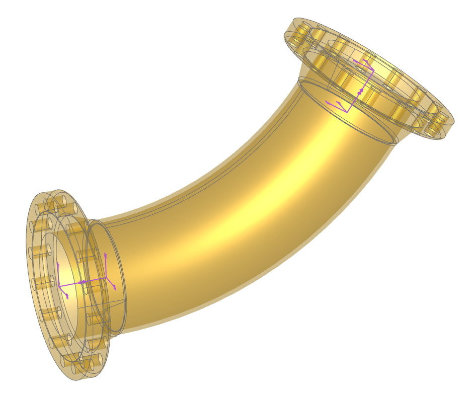
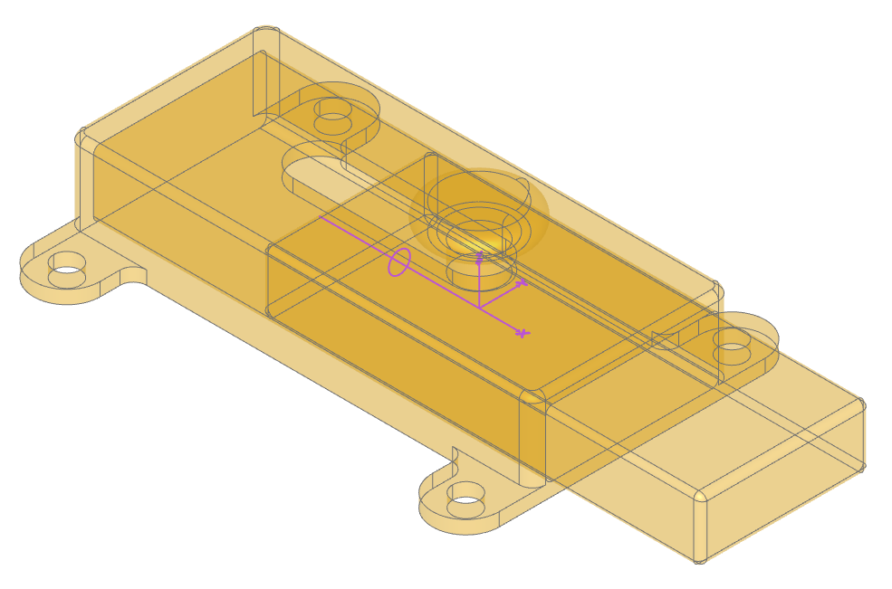

Joints
Joint’s enable Solid and Compound objects to be arranged
relative to each other in an intuitive manner - with the same degree of motion
that is found with the equivalent physical joints. Joint’s always work
in pairs - a Joint can only be connected to another Joint as follows:
connect_to |
Example |
|
|---|---|---|
Gimbal |
||
Screw |
||
Slider or Pin Slot |
||
Hinge |
||
Fixed |
Objects may have many joints bound to them each with an identifying label. All Joint
objects have a symbol property that can be displayed to help visualize
their position and orientation (the ocp-vscode viewer
has built-in support for displaying joints).
Note
If joints are created within the scope of a BuildPart builder, the to_part
parameter need not be specified as the builder will, on exit, automatically transfer the joints created in its
scope to the part created.
The following sections provide more detail on the available joints and describes how they are used.
Rigid Joint
A rigid joint positions two components relative to each another with no freedom of movement. When a
RigidJoint is instantiated it’s assigned a label, a part to bind to (to_part),
and a joint_location which defines both the position and orientation of the joint (see
Location) - as follows:
RigidJoint(label="outlet", to_part=pipe, joint_location=path.location_at(1))
Once a joint is bound to a part this way, the connect_to() method can be used to
repositioning another part relative to self which stay fixed - as follows:
pipe.joints["outlet"].connect_to(flange_outlet.joints["pipe"])
Note
Within a part all of the joint labels must be unique.
The connect_to() method only does a one time re-position of a part and does not
bind them in any way; however, putting them into an Assemblies will maintain there relative locations
as will combining parts with boolean operations or within a BuildPart context.
As a example of creating parts with joints and connecting them together, consider the following code where flanges are attached to the ends of a curved pipe:
import copy
from build123d import *
from bd_warehouse.flange import WeldNeckFlange
from bd_warehouse.pipe import PipeSection
from ocp_vscode import *
flange_inlet = WeldNeckFlange(nps="10", flange_class=300)
flange_outlet = copy.copy(flange_inlet)
with BuildPart() as pipe_builder:
# Create the pipe
with BuildLine():
path = TangentArc((0, 0, 0), (2 * FT, 0, 1 * FT), tangent=(1, 0, 0))
with BuildSketch(Plane(origin=path @ 0, z_dir=path % 0)):
PipeSection("10", material="stainless", identifier="40S")
sweep()
# Add the joints
RigidJoint(label="inlet", joint_location=-path.location_at(0))
RigidJoint(label="outlet", joint_location=path.location_at(1))
# Place the flanges at the ends of the pipe
pipe_builder.part.joints["inlet"].connect_to(flange_inlet.joints["pipe"])
pipe_builder.part.joints["outlet"].connect_to(flange_outlet.joints["pipe"])
show(pipe_builder, flange_inlet, flange_outlet, render_joints=True)
Note how the locations of the joints are determined by the location_at() method
and how the - negate operator is used to reverse the direction of the location without changing its
poosition. Also note that the WeldNeckFlange class predefines two joints, one at the pipe end and
one at the face end - both of which are shown in the above image (generated by ocp-vscode with the
render_joints=True flag set in the show function).
- class RigidJoint(label: str, to_part: Solid | Compound | None = None, joint_location: Location | None = None)[source]
A rigid joint fixes two components to one another.
- Parameters:
- Variables:
relative_location (Location) – joint location relative to bound object
- connect_to(other: BallJoint, *, angles: Rotation | tuple[float, float, float] | None = None, **kwargs)[source]
- connect_to(other: CylindricalJoint, *, position: float | None = None, angle: float | None = None)
- connect_to(other: LinearJoint, *, position: float | None = None)
- connect_to(other: RevoluteJoint, *, angle: float | None = None)
- connect_to(other: RigidJoint)
Connect the RigidJoint to another Joint
- Parameters:
other (Joint) – joint to connect to
angle (float, optional) – angle in degrees. Defaults to range min.
angles (RotationLike, optional) – angles about axes in degrees. Defaults to range minimums.
position (float, optional) – linear position. Defaults to linear range min.
- property location: Location
Location of joint
- relative_to(other: BallJoint, *, angles: Rotation | tuple[float, float, float] | None = None)[source]
- relative_to(other: CylindricalJoint, *, position: float | None = None, angle: float | None = None)
- relative_to(other: LinearJoint, *, position: float | None = None)
- relative_to(other: RevoluteJoint, *, angle: float | None = None)
- relative_to(other: RigidJoint)
Relative location of RigidJoint to another Joint
- Parameters:
other (RigidJoint) – relative to joint
angle (float, optional) – angle in degrees. Defaults to range min.
angles (RotationLike, optional) – angles about axes in degrees. Defaults to range minimums.
position (float, optional) – linear position. Defaults to linear range min.
- Raises:
TypeError – other must be of a type in: BallJoint, CylindricalJoint, LinearJoint, RevoluteJoint, RigidJoint.
- property symbol: Compound
A CAD symbol (XYZ indicator) as bound to part
Revolute Joint
Component rotates around axis like a hinge. The Joint Tutorial covers Revolute Joints in detail.
During instantiation of a RevoluteJoint there are three parameters not present with
Rigid Joints: axis, angle_reference, and range that allow the circular motion to be fully
defined.
When connect_to() with a Revolute Joint, an extra angle parameter is present
which allows one to change the relative position of joined parts by changing a single value.
- class RevoluteJoint(label: str, to_part: Solid | Compound | None = None, axis: Axis = ((0.0, 0.0, 0.0), (0.0, 0.0, 1.0)), angle_reference: Vector | tuple[float, float] | tuple[float, float, float] | Sequence[float] | None = None, angular_range: tuple[float, float] = (0, 360))[source]
Component rotates around axis like a hinge.
- Parameters:
label (str) – joint label
to_part (Union[Solid, Compound], optional) – object to attach joint to
axis (Axis) – axis of rotation
angle_reference (VectorLike, optional) – direction normal to axis defining where angles will be measured from. Defaults to None.
range (tuple[float, float], optional) – (min,max) angle of joint. Defaults to (0, 360).
- Variables:
- Raises:
ValueError – angle_reference must be normal to axis
- connect_to(other: RigidJoint, *, angle: float | None = None)[source]
Connect RevoluteJoint and RigidJoint
- Parameters:
other (RigidJoint) – relative to joint
angle (float, optional) – angle in degrees. Defaults to range min.
- Returns:
other must of type RigidJoint ValueError: angle out of range
- Return type:
TypeError
- property location: Location
Location of joint
- relative_to(other: RigidJoint, *, angle: float | None = None)[source]
Relative location of RevoluteJoint to RigidJoint
- Parameters:
other (RigidJoint) – relative to joint
angle (float, optional) – angle in degrees. Defaults to range min.
- Raises:
TypeError – other must of type RigidJoint
ValueError – angle out of range
- property symbol: Compound
A CAD symbol representing the axis of rotation as bound to part
Linear Joint
Component moves along a single axis as with a sliding latch shown here:
The code to generate these components follows:
from build123d import *
from ocp_vscode import *
with BuildPart() as latch:
# Basic box shape to start with filleted corners
Box(70, 30, 14)
end = latch.faces().sort_by(Axis.X)[-1] # save the end with the hole
fillet(latch.edges().filter_by(Axis.Z), 2)
fillet(latch.edges().sort_by(Axis.Z)[-1], 1)
# Make screw tabs
with BuildSketch(latch.faces().sort_by(Axis.Z)[0]) as l4:
with Locations((-30, 0), (30, 0)):
SlotOverall(50, 10, rotation=90)
Rectangle(50, 30)
fillet(l4.vertices(Select.LAST), radius=2)
extrude(amount=-2)
with GridLocations(60, 40, 2, 2):
Hole(2)
# Create the hole from the end saved previously
with BuildSketch(end) as slide_hole:
add(end)
offset(amount=-2)
fillet(slide_hole.vertices(), 1)
extrude(amount=-68, mode=Mode.SUBTRACT)
# Slot for the handle to slide in
with BuildSketch(latch.faces().sort_by(Axis.Z)[-1]):
SlotOverall(32, 8)
extrude(amount=-2, mode=Mode.SUBTRACT)
# The slider will move align the x axis 12mm in each direction
LinearJoint("latch", axis=Axis.X, linear_range=(-12, 12))
with BuildPart() as slide:
# The slide will be a little smaller than the hole
with BuildSketch() as s1:
add(slide_hole.sketch)
offset(amount=-0.25)
# The extrusions aren't symmetric
extrude(amount=46)
extrude(slide.faces().sort_by(Axis.Z)[0], amount=20)
# Round off the ends
fillet(slide.edges().group_by(Axis.Z)[0], 1)
fillet(slide.edges().group_by(Axis.Z)[-1], 1)
# Create the knob
with BuildSketch() as s2:
with Locations((12, 0)):
SlotOverall(15, 4, rotation=90)
Rectangle(12, 7, align=(Align.MIN, Align.CENTER))
fillet(s2.vertices(Select.LAST), 1)
split(bisect_by=Plane.XZ)
revolve(axis=Axis.X)
# Align the joint to Plane.ZY flipped
RigidJoint("slide", joint_location=Location(-Plane.ZY))
# Position the slide in the latch: -12 >= position <= 12
latch.part.joints["latch"].connect_to(slide.part.joints["slide"], position=12)
# show(latch.part, render_joints=True)
# show(slide.part, render_joints=True)
show(latch.part, slide.part, render_joints=True)
{kind=link}
{kind=link}
Note how the slide is constructed in a different orientation than the direction of motion. The three highlighted lines of code show how the joints are created and connected together:
The
LinearJointhas an axis and limits of movementThe
RigidJointhas a single location, orientated such that the knob will ultimately be “up”The
connect_tospecifies a position that must be within the predefined limits.
The slider can be moved back and forth by just changing the position value. Values outside
of the limits will raise an exception.
- class LinearJoint(label: str, to_part: Solid | Compound | None = None, axis: Axis = ((0.0, 0.0, 0.0), (0.0, 0.0, 1.0)), linear_range: tuple[float, float] = (0, inf))[source]
Component moves along a single axis.
- Parameters:
- Variables:
- connect_to(other: RevoluteJoint, *, position: float | None = None, angle: float | None = None)[source]
- connect_to(other: RigidJoint, *, position: float | None = None)
Connect LinearJoint to another Joint
- Parameters:
other (Joint) – joint to connect to
angle (float, optional) – angle in degrees. Defaults to range min.
position (float, optional) – linear position. Defaults to linear range min.
- Raises:
TypeError – other must be of type RevoluteJoint or RigidJoint
ValueError – position out of range
ValueError – angle out of range
- property location: Location
Location of joint
- relative_to(other: RigidJoint, *, position: float | None = None)[source]
- relative_to(other: RevoluteJoint, *, position: float | None = None, angle: float | None = None)
Relative location of LinearJoint to RevoluteJoint or RigidJoint
- Parameters:
other (Joint) – joint to connect to
angle (float, optional) – angle in degrees. Defaults to range min.
position (float, optional) – linear position. Defaults to linear range min.
- Raises:
TypeError – other must be of type RevoluteJoint or RigidJoint
ValueError – position out of range
ValueError – angle out of range
- property symbol: Compound
A CAD symbol of the linear axis positioned relative to_part
Cylindrical Joint
A CylindricalJoint allows a component to rotate around and moves along a single axis
like a screw combining the functionality of a LinearJoint and a
RevoluteJoint joint. The connect_to for these joints have both position and
angle parameters as shown below extracted from the joint tutorial.
- class CylindricalJoint(label: str, to_part: Solid | Compound | None = None, axis: Axis = ((0.0, 0.0, 0.0), (0.0, 0.0, 1.0)), angle_reference: Vector | tuple[float, float] | tuple[float, float, float] | Sequence[float] | None = None, linear_range: tuple[float, float] = (0, inf), angular_range: tuple[float, float] = (0, 360))[source]
Component rotates around and moves along a single axis like a screw.
- Parameters:
label (str) – joint label
to_part (Union[Solid, Compound], optional) – object to attach joint to
axis (Axis) – axis of rotation and linear motion
angle_reference (VectorLike, optional) – direction normal to axis defining where angles will be measured from. Defaults to None.
linear_range (tuple[float, float], optional) – (min,max) position of joint. Defaults to (0, inf).
angular_range (tuple[float, float], optional) – (min,max) angle of joint. Defaults to (0, 360).
- Variables:
axis (Axis) – joint axis
linear_position (float) – linear joint position
rotational_position (float) – revolute joint angle in degrees
angle_reference (Vector) – reference for angular positions
angular_range (tuple[float,float]) – min and max angular position of joint
linear_range (tuple[float,float]) – min and max positional values
relative_axis (Axis) – joint axis relative to bound part
position (float) – joint position
angle (float) – angle of joint
- Raises:
ValueError – angle_reference must be normal to axis
- connect_to(other: RigidJoint, *, position: float | None = None, angle: float | None = None)[source]
Connect CylindricalJoint and RigidJoint”
- Parameters:
other (Joint) – joint to connect to
position (float, optional) – linear position. Defaults to linear range min.
angle (float, optional) – angle in degrees. Defaults to range min.
- Raises:
TypeError – other must be of type RigidJoint
ValueError – position out of range
ValueError – angle out of range
- property location: Location
Location of joint
- relative_to(other: RigidJoint, *, position: float | None = None, angle: float | None = None)[source]
Relative location of CylindricalJoint to RigidJoint
- Parameters:
other (Joint) – joint to connect to
position (float, optional) – linear position. Defaults to linear range min.
angle (float, optional) – angle in degrees. Defaults to range min.
- Raises:
TypeError – other must be of type RigidJoint
ValueError – position out of range
ValueError – angle out of range
- property symbol: Compound
A CAD symbol representing the cylindrical axis as bound to part
Ball Joint
A component rotates around all 3 axes using a gimbal system (3 nested rotations). A BallJoint
is found within a rod end as shown here:
from build123d import *
from bd_warehouse.thread import IsoThread
from ocp_vscode import *
# Create the thread so the min radius is available below
thread = IsoThread(
major_diameter=8, pitch=1.25, length=20, end_finishes=("fade", "raw")
)
inner_radius = 15.89 / 2
inner_gap = 0.2
with BuildPart() as rod_end:
# Create the outer shape
with BuildSketch():
Circle(22.25 / 2)
with Locations((0, -12)):
Rectangle(8, 1)
make_hull()
split(bisect_by=Plane.YZ)
revolve(axis=Axis.Y)
# Refine the shape
with BuildSketch(Plane.YZ) as s2:
Rectangle(25, 8, align=(Align.MIN, Align.CENTER))
Rectangle(9, 10, align=(Align.MIN, Align.CENTER))
chamfer(s2.vertices(), 0.5)
revolve(axis=Axis.Z, mode=Mode.INTERSECT)
# Add the screw shaft
Cylinder(
thread.min_radius,
30,
rotation=(90, 0, 0),
align=(Align.CENTER, Align.CENTER, Align.MIN),
)
# Cutout the ball socket
Sphere(inner_radius, mode=Mode.SUBTRACT)
# Add thread
with Locations((0, -30, 0)):
add(thread, rotation=(-90, 0, 0))
# Create the ball joint
BallJoint(
"socket",
joint_location=Location(),
angular_range=((-14, 14), (-14, 14), (0, 360)),
)
with BuildPart() as ball:
Sphere(inner_radius - inner_gap)
Box(50, 50, 13, mode=Mode.INTERSECT)
Hole(4)
ball.part.color = Color("aliceblue")
RigidJoint("ball", joint_location=Location())
rod_end.part.joints["socket"].connect_to(ball.part.joints["ball"], angles=(5, 10, 0))
show(rod_end.part, ball.part)
Note how limits are defined during the instantiation of the ball joint when ensures that the pin or bolt
within the rod end does not interfere with the rod end itself. The connect_to sets the three angles
(only two are significant in this example).
- class BallJoint(label: str, to_part: Solid | Compound | None = None, joint_location: Location | None = None, angular_range: tuple[tuple[float, float], tuple[float, float], tuple[float, float]] = ((0, 360), (0, 360), (0, 360)), angle_reference: Plane = Plane(o=(0.00, 0.00, 0.00), x=(1.00, 0.00, 0.00), z=(0.00, 0.00, 1.00)))[source]
A component rotates around all 3 axes using a gimbal system (3 nested rotations).
- Parameters:
label (str) – joint label
to_part (Union[Solid, Compound], optional) – object to attach joint to
joint_location (Location) – global location of joint
angular_range – (tuple[ tuple[float, float], tuple[float, float], tuple[float, float] ], optional): X, Y, Z angle (min, max) pairs. Defaults to ((0, 360), (0, 360), (0, 360)).
angle_reference (Plane, optional) – plane relative to part defining zero degrees of rotation. Defaults to Plane.XY.
- Variables:
- connect_to(other: RigidJoint, *, angles: Rotation | tuple[float, float, float] | None = None)[source]
Connect BallJoint and RigidJoint
- Parameters:
other (RigidJoint) – joint to connect to
angles (RotationLike, optional) – angles about axes in degrees. Defaults to range minimums.
- Raises:
TypeError – invalid other joint type
ValueError – angles out of range
- property location: Location
Location of joint
- relative_to(other: RigidJoint, *, angles: Rotation | tuple[float, float, float] | None = None)[source]
relative_to - BallJoint
Return the relative location from this joint to the RigidJoint of another object
- Parameters:
other (RigidJoint) – joint to connect to
angles (RotationLike, optional) – angles about axes in degrees. Defaults to range minimums.
- Raises:
TypeError – invalid other joint type
ValueError – angles out of range
- property symbol: Compound
A CAD symbol representing joint as bound to part